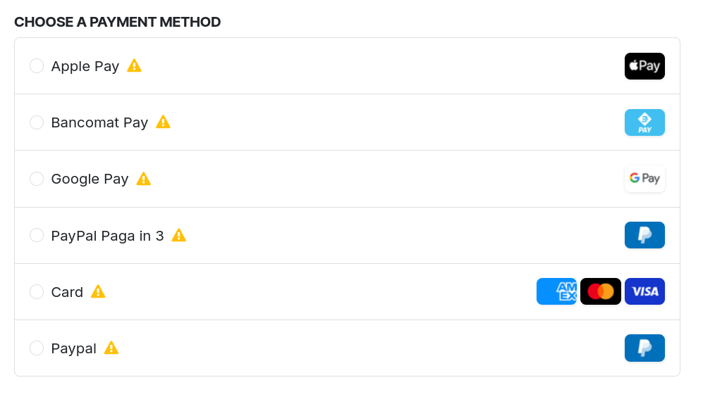

Nexi XPay Web for Odoo 18

Accept payments with Nexi XPay Web directly in the Odoo checkout.
Two modes: Hosted Page (redirect to the Nexi page) or Embedded Build v3
with card fields inside the checkout. No card data is stored in Odoo.
Features
- Hosted Page or embedded card fields (Build v3).
- Card, Google Pay, Apple Pay, Bancomat Pay, MyBank, PayPal and PayPal Pay in 3.
- Outcome always verified server-side on Nexi, with amount and currency checks.
- Only the masked PAN in Odoo (e.g.
**** 1234).
- Optional card saving (OneClick), with customer consent.
- Check methods on Nexi button hides methods the terminal does not enable.
Configuration
- Install the module and open Payment Providers → Nexi XPay Web.
- Enter the terminal
X-Api-Key and choose Test or Production.
- Choose the mode: Hosted Page or Embedded (a public HTTPS URL is required).
- Publish the provider.
Test
Use the test cards published by Nexi in the XPay documentation and complete the test 3DS.
The transaction must end up done with outcome EXECUTED.
Notes
- EUR only.
- No refunds and no manual capture.
- PayPal Pay in 3 requires an order of at least €30.
- In Embedded mode the card fields are Nexi iframes and cannot be customized.
LGPL-3 license.